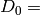
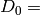

Logging¶
Note
All the logging options should say to which file they print output. Please correct this!
- LOGGING
- Start the logging input block. The logging options allow additional (potentially expensive, potentially verbose) information to be printed out during a calculation. By default, all logging options are turned off.
[Logging options—see below.]
- ENDLOG
- End the logging input block.
General options¶
- FMCPR [LABEL, RHO, 1000, EXCITATION]
More than one of the options can be specified.
Log the following to the PATHS file:
- LABEL
Logs the determinants contained by each graph as each determinant is generated in the format: [
 ]
where each determinant given as a comma-separated list of the
indices of the occupied orbitals:
e.g.  ( 1, 2, 9, 10,).
]
where each determinant given as a comma-separated list of the
indices of the occupied orbitals:
e.g.  ( 1, 2, 9, 10,).If CSFs are being used, then the CSF is printed. There is no newline after this.
For MULTI MC or SINGLE MC, only the non-composite graphs are printed.
- EXCITATION
- Log each graph in excitation format instead of full format above. The format is
- [A( i, j)->( a, b),B( k, l)->( c, d),...,C( m, n)->( e, f)]
- where
- A, B,..., C are determinants in the graph from which the excitation is made. i, j,... are the orbitals within that determinant which are excited from, where (i<j, k<l,...). a, b,... are the orbitals they are excited to, where (a<b, c<d, ...).
This format does not in general provide a unique way of specifying multiply connected graphs, but the first possible determinant to which the next det in the graph is connected is chosen, so what is output should be unique. Single excitations are written as e.g. A( i, 0)->( a, 0).
- RHO
- Log the
 matrix for each graph in the form:
matrix for each graph in the form: - (
 ),
),
where the graph consists of
 vertices. A newline is appended.
vertices. A newline is appended.- Log the
- XIJ
Log the xij matrix, which contains the generation probabilities of one determinant in the graph from all the others. For MC this is already generated, but for full sums this must be generated, so will be slower. Generation probabilities are set with the EXCITWEIGHTING option.
- The format is:
- {
 }
}
In general
 . The
. The  element lists
the number of possible excitations from
element lists
the number of possible excitations from  determinant.
The matrix is followed by a newline.
determinant.
The matrix is followed by a newline.- After all these possible options, the following are printed:
- Weight [pGen] ETilde*Weight Class [Accepted]
pGen is only printed for: Monte Carlo, or if doing a full sum and the XIJ logging option is set. Accepted is only printed for Monte Carlo calculations. A newline is placed at the end of this data. For Monte Calo calculations, the values printed depend on the options. If LABEL is set, then all generated graphs and their values are printed, otherwise only values of accepted graphs are printed.
- CALCPATH [LABEL RHO]
- Log CALCPATH_R to PATHS. Either just label logging or also
log the matrix, with the same format as above.
- HAMILTONIAN
- Log HAMIL, PSI and PSI_LONG.
- HFBASIS
- Log HFBASIS.
- HFLOGLEVEL [LEVEL]
Default 0.
If LEVEL is set to be positive, the density matrices, fock matrices and eigenvectors during a Hartree–Fock calculation are printed out to SDOUT.
- MCPATHS
- Log MCPATHS data to the MCPATHS file for full vertex sum and MCSUMMARY file when using a METHODS section. Also log to the RHOPII file.
- PSI
- Log PSI_COMP.
- TIMING [iGlobalTimerLevel | LEVEL iGlobalTimerLevel | PRINT nPrintTimer]
- LEVEL iGlobalTimerLevel
- Default 40. Timing information is only recorded for routines with level less than or equal to iGlobalTimerLevel. Less than 10 means general high level subroutines. Greater than 50 means very low level. Routines without a level are always timed (which is most of them). The greater the value of iGlobalTimerLevel, the more routines are timed. This can affect performance in some cases.
- PRINT nPrintTimer
- Default 10. Print out timing information for the nPrintTimer routines which took the longest time.
- XIJ
- Synonym for FMCPR XIJ.
FCIMC options¶
HISTSPAWN [iWriteHistEvery]
This option will histogram the spawned wavevector, averaged over all previous iterations. It scales horrifically and can only be done for small systems which can be diagonalized. It requires a enumeration of all determinants initially to work. It can write out the average wavevector every iWriteHistEvery. If a diagonalization option is set, SymDets will also be written out, containing the exact wavevector in the same format from the diagonalization.
HISTPARTENERGIES [BinRange] [iNoBins] [OffDiagBinRange] [OffDiagMax]
This is a histogramming option. It is slow, so not for use unless the diagnostic is needed. It will histogram the diagonal hamiltonian matrix element for three types of particle. Two input values are needed. The first argument is a real value to give the width of the histogram bin. The second is the number of bins needed (integer). Three histograms are produced: EVERYENERGYHIST - this is the histogram over all iterations of every particle in the system. ATTEMPTENERGYHIST - this is the histogram of the energy of all attempted spawned particles (including the ones which are successfully spawned). For this one, the contibution to the energy is actually 1/Prob of generating. SPAWNENERGYHIST - this is the histogram of all successfully spawned particles. All these histograms are normalized to one before printing out. Also now, the off-diagonal matrix elements are histogrammed. OffDiagBinRange is a real input parameter which indicates the range of the bins and OffDiagMax is the maximum matrix element to histogram. The doubles and singles will be done seperately, as are the accepted spawns and total spawns. Therefore, four files are produced - SINGLESHIST, ATTEMPTSINGLESHIST, DOUBLESHIST, ATTEMPTDOUBLESHIST. Again, these are normalized and the ATTEMPT files histogram proportionally to 1/probability of generating the excitation.
- AUTOCORR [NoACDets(2)] [NoACDets(3)] [NoACDets(4)]
- This is a parallel FCIMC option. It will output the histogrammed occupation number for certain determinants every iteration. This is so that a seperate standalone ACF program can be used on it. Currently the histogramming is evaluated for the HF determinants by default, but can also histogram determinants from other excitation levels. Firstly, it will calculate the ‘NoACDets(2)’ largest-weighted MP1 components (double excitations). It will then take the largest weighted double and do a new MP1 calculation with it as the root. It will then histogram the ‘NoACDets(3)’ largest weighted triple excitations, and the ‘NoACDets(4)’ largest quadruple excitations from this calculation to also histogram.
- REDUCEDPOPSFILE [iWritePopsEvery] [iPopsPartEvery]
- This works in the same way as the normal popsfile, but only every iPopsPartEvery particle is printed out.
- POPSFILE [iWritePopsEvery]
Default: on. Default iWritePopsEvery (optional argument) 100000. Print out the determinants every iWritePopsEvery Monte-Carlo cycles. iWritePopsEvery should idealy be a multiple of STEPSSHIFT, the number of cycles between updates to the diagonal shift performed in the FCIMC calculation, to make sure the start of the next simulation follows smoothly
A calculation can then be restarted at a later date by reading the determinants back in using READPOPS in the CALC section. Walker number can also be scaled up/down by using SCALEWALKERS. If the iWritePopsEvery argument is negative, then the POPSFILE is never written out, even at the end of a simulation. This is useful for very large calculations where the POPSFILE will take a long time to write out and use a lot of disk space.
- BINARYPOPS
- This means that the popsfile (full or reduced) will now be written out in binary format. This should now take up less disk space, and be written quicker. It can be read in as normal without specifying any extra criteria. Two files will be produced, a formatted file with the header info and a POPSFILEBIN with the walker information.
- ZEROPROJE
- This is for FCIMC when reading in from a POPSFILE. If this is on, then the energy estimator will be restarted.
- WAVEVECTORPRINT
- This is for Star FCIMC only - if on, it will calculate the exact eigenvector and values initially, and then print out the running wavevector every WavevectorPrint MC steps. However, this is slower.
- PRINTFCIMCPSI
- This works for parallel FCIMC. This will enumerate all excitations (up to the truncation level specified, or the full space if not specified), and then histogram the spawning run, writing out the final averaged wavefunction at the end.
- HISTEQUILSTEPS [NHistEquilSteps]
- Default=.false. [0] This works when the evolving wavefunction is to be histogrammed (for example using the above PRINTFCIMCPSI option, or the USECINATORBS orbital rotation option). This sets the histogramming to only begin after NHistEquilSteps iterations. This is so that the fluctuation populations at the beginning of a calculation may be left out.
- PRINTORBOCCS
- Default=.false. This turns on the histogramming of the determinant populations, and at the end of the spawning, calls a routine to add up the contribution of each orbital to the final wavefunction. A ORBOCCUPATIONS file is then printed containing the orbitals and their normalised absolute occupations.
- WRITEDETE [NoHistBins] [MaxHistE]
- This is an FCIMC option and will write out a histogram of the energies of determinants which have had particles spawned at them and their excitation level. The histogram logs the total amount of time spent at a determinant and its energy for each energy range. This is diagnostic information. The first variable to input is the number of histogram bins which will be calculated, and the second is the maximum determinant energy of the histogram.
- PRINTTRICONNECTIONS [TriConMax] [NoTriConBins]
- This is a parallel FCIMC option. It looks at sets of connected determinants i,j and k. A sign coherent triangular connection is one where walkers spawned all around the triangle return to the original determinant with the same sign. Sign incoherent connections are those where the sign is reversed. If this option is on, two files are printed. TriConnTotal monitors the number of sign coherent and sign incoherent triangles over the course of the simulation, as well as the sum of the Hij x Hik x Hjk values, and the ratios for each. (The ratios are coherent / incoherent). TriConnHist prints out a histogram of the Hij x Hik x Hjk values for coherent (col 1 and 2) and incoherent (col 3 and 4) triangles. The histogram goes from 0 -> +/- TriConMax with NoTriConBins for each.
- HISTTRICONNELEMENTS [TriConHElSingMax] [TriConHElDoubMax] [NoTriConHElBins]
- This option histograms all the H elements involved in the triangular connections of determinants mentioned above. These are separated into doubles and singles, and an extra file, containing only the Hjk elements is also included. The histogram range is between +/-TriConHElSingMax for the singles and +/-TriConHElDoubMax for the doubles, with NoTriConHElBins bins for each. With this option, some stats are also printed in the output regarding the average magnitudes for each type of H elements.
- PRINTHELACCEPTSTATS
- This option prints out a file (HElsAcceptance) containing information about the nature of the H elements resulting in accepted and not accepted spawns. This includes the number of not accepted spawns vs accepted, and the average size of the H element involved in accepted and not accepted spawns.
- PRINTSPINCOUPHELS
- Default=.false. When attempting to spawn on a determinant i, this option finds the determinant j which is spin coupled to i, and prints out a set of stats relating to the sign and magnitude of the H element connecting i and j, Hij. These stats are printed in a file named SpinCoupHEl.
- CCMCDEBUG iCCMCDebug
- Specify the CCMC debug level. Default 0 (no debugging information printed). Higher numbers will generate more information.
- CCMCLOGTRANSITIONS [NONUNIQUE UNIQUE]
- Do we log all transitions in CCMC. Very slow and memory intensive - only possible for extremely small systems.
- Default is UNIQUE. If NONUNIQUE is specified, then clusters with different orders are distinguished.
GraphMorph options¶
- DISTRIBS
- Write out the distribution of the excitations in each graph as it morphs over the iterations. The first column is the iteration number, and then subsequent columns denote the number of n-fold excitations in the graph.
PRECALC options¶
- PREVAR
- Print the vertex level, Iteration number, parameter, and expected variance, for each parameter which was searched for in the PRECALC block, showing the convergence on the optimum value, to the PRECALC file.
- SAVEPRECALCLOGGING
Allows different logging levels to be used in the PRECALC block than for the main calculation.
All logging options specified before SAVEPRECALCLOGGING are only used in the the PRECALC part of the calculation. All logging options specified after SAVEPRECALCLOGGING are only used in the the main part of the calculation.
Monte Carlo options¶
- BLOCKING
- Perform a blocking analysis on the MC run. An MCBLOCKS file will be produced, which lists log(2)[blocksize], the average of the blocks, the error in the blocks(where the blocks are the energy ratio), and the full error, treating the energy estimator as a correlated ratio of two quantities.
- ERRORBLOCKING [OFF]
- Default= ErrorBlocking.true. This can be used to turn off the error blocking analysis that is peformed by default on parallel FCIMC calculations. The default error blocking begins when the sum of the HF population over an update cycle reaches 1000. At the end of the simulation a BLOCKINGANALYSIS file is printed containing a list of block sizes with the resulting average of the projected energies calculated over an update cycle, the error in this energy and the error on the calculated error due to the block size.
- BLOCKINGSTARTHFPOP [HFPopStartBlocking]
- Default=1000 This can be used to change the HF population that triggers the start of the error blocking analysis. Using this keyword over rides the default, and the blocking starts when the sum of the HF pop over an update cycle reaches HFPopStartBlocking.
- BLOCKINGSTARTITER [IterStartBlocking]
Default=.false. This can be used to set the error blocking to begin at iteration number IterStartBlocking, rather than a particular HF population.
The error blocking may also be initiated instantly by using STARTERRORBLOCKING in the CHANGEVARS file. Additionally, PRINTERRORBLOCKING will print the BLOCKINGANALYSIS file at that point, yet the calculation (and blocking) will continue (note - this file will be overwritten when the calculation ends and the final blocking stats are printed, so it must be renamed if it is to be kept). RESTARTERRORBLOCKING in the CHANGEVARS file zeroes all the blocking arrays and starts again from that point in the calculation.
- SHIFTERRORBLOCKING [OFF]
- Default= ShiftErrorblocking.true. This can be used to turn off the default error blocking of the shift values. This only starts when the shift begins to vary, and may be restarted or the current SHIFTBLOCKINGANALYSIS file printed at that point using CHANGEVARS.
- SHIFTBLOCKINGSTARTITER [IterShiftBlock]
- This can be used to specify the number of iterations after the shift is allowed to change that the shift error blocking begins.
- VERTEX [EVERY n]
Log the vertex MC with
 every n (real) cycles
and/or log the vertex MC contribution every cycle. Setting
Delta
every n (real) cycles
and/or log the vertex MC contribution every cycle. Setting
Delta  , where
, where
 is usually the 1-vertex graph:
is usually the 1-vertex graph:- EVERY
write a VMC file with the following info, with a new line each time the current graph changes:
tot # virt steps, # steps in this graph, #verts, Class, Weight, Delta, <sign(W)>, <Delta sign(W)>, ~standard deviation <Delta sign>/<sign>,pgen
- n:
write a VERTEXMC file with the following info:
0, #graphs, <sign(W)>, stdev(sign(W)), <Delta>, <sign Delta>/<sign>, <Delta^2>, acc ratio, trees ratio, nontree+ ratio, non-tree- ratio, <Delta sign(W)>, E~ reference, #sequences,w reference
Note
George, what are most of these values?
- WAVEVECTORPRINT [nWavevectorPrint]
Relevant only for Monte Carlo star calculations.
Calculate the exact eigen-vectors and -values initially, and print out the running wavevector every nWavevectorPrint Monte Carlo steps. This is slows the calculation down substantially.
Rotate Orbs Options¶
- ROFCIDUMP [OFF]
- At the end of an orbital rotation (or in the case of a softexit), by default a ROFCIDUMP file will be printed using the transformation coefficients. This may then be read in to a spawning calculation. In the case of ROFCIDUMP OFF, no FCIDUMP will be printed. Note: When reading in the ROFCIDUMP, the number of electrons must be reduced by the number frozen in the previous rotation, and the number frozen set to 0.
- ROHISTOGRAMALL
- If this keyword is present, two files are printed for all possible histograms. One labelled HistHF*, and one HistRot* containing the histogram before and after rotation. With this, certain histograms may be turned off by using the below keywords. Alternatively combinations of the keywords below may be used to just print a selection of the possible histograms.
- ROHISTOFFDIAG [OFF]
- Histograms <ij|kl> terms before and after rotation where i<k and j<l.
- ROHISTDOUBEXC [OFF]
- Histograms the 2<ij|kl>-<ij|lk> terms, the off diagonal hamiltonian elements for double excitations.
- ROHISTSINGEXC [OFF]
- Histograms the single excitation hamiltonian elements.
- ROHISTER [OFF]
- Histograms the <ii|ii> values before and after rotation.
- ROHISTONEElINTS [OFF]
- Histograms the one electron integral terms, <i|h|i>.
- ROHISTONEPARTORBEN [OFF]
- Histograms the one particle orbital energies, epsilon_i = <i|h|i> + sum_j [<ij||ij>], where j is over the occupied orbitals only.
- ROHISTVIRTCOULOMB [OFF]
- Histograms the two electron coulomb integrals <ij|ij> where i and j are both virtual spatial orbitals and i<j.
- TRUNCROFCIDUMP [NoFrozenOrbs]
- This option goes along with the USEMP2VDM rotation option. Having diagonalised the MP2VDM matrix to get the transformation matrix. This option truncates the virtual orbital space by removing the NoFrozenOrbs SPIN orbitals with the lowest occupation numbers (MP2VDM eigenvalues). Only the remaining orbitals are transformed and included in the ROFCIDUMP that is printed. This kind of transformation requires different ordering of the orbitals to that which is standard for spawning calculation, so it is not possible to go straight from this rotation into a spawning calc. The ROFCIDUMP must be printed out then read back in.
- WRITETRANSFORMMAT
- Default false. This keyword must be included if we are doing a natural orbital rotation, and we want to print out an MOTRANSFORM file. This file contains the transformation matrix in binary which can be used with Qchem to get the cube files for the new orbitals. NOTE: This file is only printed correctly if NECI is compiled using PGI when the file is printed.